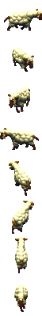
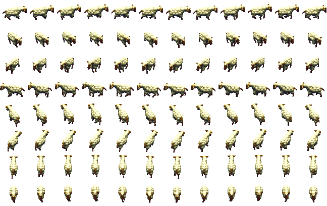

Tribe19 sheep (Sheep)Type / job ID49Animation job ID49Native nameadult_animalEnglishAnimalSex / ageadultNative allowedTrueParent chain (baseatomics)[49, 48]Confidence{"sourceMapping": "SOURCE_COMPLETE", "framePixels": "PIXEL_CONFIRMED (per frame; see Catalogs/pixel_validation.csv)", "palette": "SOURCE_BODY_PALETTE", "shadow": "Coverage mask only; native destination darkening -> PRESENTATION_APPROXIMATION", "timing": "Native frame order and selection rules recorded; tick-to-seconds rate UNKNOWN"}Native references{"Game.exe": ["0x0048BD66 GraphicsAnimationRegistry_LoadFromCif", "0x0048CEA1 BobSeq global lookup", "0x00494AE6 frame selection", "0x004803D5 creation binding/palette", "0x00480576 job-change rebinding", "0x0048B258 random palette patches", "0x0049B930 shadow destination darkening"], "cpp": "MobileSpriteRegistry / MobileSpriteRuntimeOwner / ProductionWorldCompositor"}
Graphics bindings
| phase | section | inherited from | body variants (selector: body / shadow) | head variants | palettes | random palettes |
|---|---|---|---|---|---|---|
| initial | 21 | 0: CR_Ani_Body_00 / CR_Ani_Body_00_s atlas | house01 |
Animations
Sheets: one row per native direction (0..7, only directions with frames), columns in native frame-list order, shared anchor. Colours use the declared base palette; runtime RNG palette ordinal, player colour and random patches are not applied (PRESENTATION_APPROXIMATION). Shadow masks are kind-2 coverage DATA.
atomic 2 animal_sheep_adult_idle | BobSeq animal_sheep_walk | section 387 | mode 0 | length 100
frame = min(count-1, floor(count*progress/duration)); duration from atomic length


direction frame lists (BOB ids)
[{"direction": 0, "bodyBobs": [2569], "headBobs": [2569], "status": null}, {"direction": 1, "bodyBobs": [2578], "headBobs": [2578], "status": null}, {"direction": 2, "bodyBobs": [2519], "headBobs": [2519], "status": null}, {"direction": 3, "bodyBobs": [2528], "headBobs": [2528], "status": null}, {"direction": 4, "bodyBobs": [2540], "headBobs": [2540], "status": null}, {"direction": 5, "bodyBobs": [2552], "headBobs": [2552], "status": null}, {"direction": 6, "bodyBobs": [2610], "headBobs": [2610], "status": null}, {"direction": 7, "bodyBobs": [2592], "headBobs": [2592], "status": null}]atomic 3 animal_sheep_adult_idle | BobSeq animal_sheep_walk | section 382 | mode 0 | length 100
frame = min(count-1, floor(count*progress/duration)); duration from atomic length


direction frame lists (BOB ids)
[{"direction": 0, "bodyBobs": [2569], "headBobs": [2569], "status": null}, {"direction": 1, "bodyBobs": [2578], "headBobs": [2578], "status": null}, {"direction": 2, "bodyBobs": [2519], "headBobs": [2519], "status": null}, {"direction": 3, "bodyBobs": [2528], "headBobs": [2528], "status": null}, {"direction": 4, "bodyBobs": [2540], "headBobs": [2540], "status": null}, {"direction": 5, "bodyBobs": [2552], "headBobs": [2552], "status": null}, {"direction": 6, "bodyBobs": [2610], "headBobs": [2610], "status": null}, {"direction": 7, "bodyBobs": [2592], "headBobs": [2592], "status": null}]atomic 4 animal_sheep_adult_idle | BobSeq animal_sheep_walk | section 383 | mode 0 | length 100
frame = min(count-1, floor(count*progress/duration)); duration from atomic length


direction frame lists (BOB ids)
[{"direction": 0, "bodyBobs": [2569], "headBobs": [2569], "status": null}, {"direction": 1, "bodyBobs": [2578], "headBobs": [2578], "status": null}, {"direction": 2, "bodyBobs": [2519], "headBobs": [2519], "status": null}, {"direction": 3, "bodyBobs": [2528], "headBobs": [2528], "status": null}, {"direction": 4, "bodyBobs": [2540], "headBobs": [2540], "status": null}, {"direction": 5, "bodyBobs": [2552], "headBobs": [2552], "status": null}, {"direction": 6, "bodyBobs": [2610], "headBobs": [2610], "status": null}, {"direction": 7, "bodyBobs": [2592], "headBobs": [2592], "status": null}]atomic 5 animal_sheep_adult_idle | BobSeq animal_sheep_walk | section 384 | mode 0 | length 100
frame = min(count-1, floor(count*progress/duration)); duration from atomic length


direction frame lists (BOB ids)
[{"direction": 0, "bodyBobs": [2569], "headBobs": [2569], "status": null}, {"direction": 1, "bodyBobs": [2578], "headBobs": [2578], "status": null}, {"direction": 2, "bodyBobs": [2519], "headBobs": [2519], "status": null}, {"direction": 3, "bodyBobs": [2528], "headBobs": [2528], "status": null}, {"direction": 4, "bodyBobs": [2540], "headBobs": [2540], "status": null}, {"direction": 5, "bodyBobs": [2552], "headBobs": [2552], "status": null}, {"direction": 6, "bodyBobs": [2610], "headBobs": [2610], "status": null}, {"direction": 7, "bodyBobs": [2592], "headBobs": [2592], "status": null}]atomic 6 animal_sheep_adult_idle | BobSeq animal_sheep_walk | section 385 | mode 0 | length 100
frame = min(count-1, floor(count*progress/duration)); duration from atomic length



direction frame lists (BOB ids)
[{"direction": 0, "bodyBobs": [2569], "headBobs": [2569], "status": null}, {"direction": 1, "bodyBobs": [2578], "headBobs": [2578], "status": null}, {"direction": 2, "bodyBobs": [2519], "headBobs": [2519], "status": null}, {"direction": 3, "bodyBobs": [2528], "headBobs": [2528], "status": null}, {"direction": 4, "bodyBobs": [2540], "headBobs": [2540], "status": null}, {"direction": 5, "bodyBobs": [2552], "headBobs": [2552], "status": null}, {"direction": 6, "bodyBobs": [2610], "headBobs": [2610], "status": null}, {"direction": 7, "bodyBobs": [2592], "headBobs": [2592], "status": null}]atomic 7 animal_sheep_adult_idle | BobSeq animal_sheep_walk | section 386 | mode 0 | length 100
frame = min(count-1, floor(count*progress/duration)); duration from atomic length


direction frame lists (BOB ids)
[{"direction": 0, "bodyBobs": [2569], "headBobs": [2569], "status": null}, {"direction": 1, "bodyBobs": [2578], "headBobs": [2578], "status": null}, {"direction": 2, "bodyBobs": [2519], "headBobs": [2519], "status": null}, {"direction": 3, "bodyBobs": [2528], "headBobs": [2528], "status": null}, {"direction": 4, "bodyBobs": [2540], "headBobs": [2540], "status": null}, {"direction": 5, "bodyBobs": [2552], "headBobs": [2552], "status": null}, {"direction": 6, "bodyBobs": [2610], "headBobs": [2610], "status": null}, {"direction": 7, "bodyBobs": [2592], "headBobs": [2592], "status": null}]atomic 9 animal_bear_eat | BobSeq animal_sheep_walk | section 388 | mode 0 | length 20
frame = min(count-1, floor(count*progress/duration)); duration from atomic length


direction frame lists (BOB ids)
[{"direction": 0, "bodyBobs": [2569], "headBobs": [2569], "status": null}, {"direction": 1, "bodyBobs": [2578], "headBobs": [2578], "status": null}, {"direction": 2, "bodyBobs": [2519], "headBobs": [2519], "status": null}, {"direction": 3, "bodyBobs": [2528], "headBobs": [2528], "status": null}, {"direction": 4, "bodyBobs": [2540], "headBobs": [2540], "status": null}, {"direction": 5, "bodyBobs": [2552], "headBobs": [2552], "status": null}, {"direction": 6, "bodyBobs": [2610], "headBobs": [2610], "status": null}, {"direction": 7, "bodyBobs": [2592], "headBobs": [2592], "status": null}]walk 0 walk | BobSeq animal_sheep_walk | section 1140 | mode 0 | length None
frame = frameTick % count (walk; caller frame tick)



direction frame lists (BOB ids)
[{"direction": 0, "bodyBobs": [2564, 2565, 2566, 2567, 2568, 2569, 2570, 2571, 2572, 2573, 2574, 2575], "headBobs": [2564, 2565, 2566, 2567, 2568, 2569, 2570, 2571, 2572, 2573, 2574, 2575], "status": null}, {"direction": 1, "bodyBobs": [2576, 2577, 2578, 2579, 2580, 2581, 2582, 2583, 2584, 2585, 2586, 2587], "headBobs": [2576, 2577, 2578, 2579, 2580, 2581, 2582, 2583, 2584, 2585, 2586, 2587], "status": null}, {"direction": 2, "bodyBobs": [2516, 2517, 2518, 2519, 2520, 2521, 2522, 2523, 2524, 2525, 2526, 2527], "headBobs": [2516, 2517, 2518, 2519, 2520, 2521, 2522, 2523, 2524, 2525, 2526, 2527], "status": null}, {"direction": 3, "bodyBobs": [2528, 2529, 2530, 2531, 2532, 2533, 2534, 2535, 2536, 2537, 2538, 2539], "headBobs": [2528, 2529, 2530, 2531, 2532, 2533, 2534, 2535, 2536, 2537, 2538, 2539], "status": null}, {"direction": 4, "bodyBobs": [2540, 2541, 2542, 2543, 2544, 2545, 2546, 2547, 2548, 2549, 2550, 2551], "headBobs": [2540, 2541, 2542, 2543, 2544, 2545, 2546, 2547, 2548, 2549, 2550, 2551], "status": null}, {"direction": 5, "bodyBobs": [2552, 2553, 2554, 2555, 2556, 2557, 2558, 2559, 2560, 2561, 2562, 2563], "headBobs": [2552, 2553, 2554, 2555, 2556, 2557, 2558, 2559, 2560, 2561, 2562, 2563], "status": null}, {"direction": 6, "bodyBobs": [2600, 2601, 2602, 2603, 2604, 2605, 2606, 2607, 2608, 2609, 2610, 2611], "headBobs": [2600, 2601, 2602, 2603, 2604, 2605, 2606, 2607, 2608, 2609, 2610, 2611], "status": null}, {"direction": 7, "bodyBobs": [2588, 2589, 2590, 2591, 2592, 2593, 2594, 2595, 2596, 2597, 2598, 2599], "headBobs": [2588, 2589, 2590, 2591, 2592, 2593, 2594, 2595, 2596, 2597, 2598, 2599], "status": null}]Atomics declared without a graphics record
81:animal_bear_attack
0x00494AE6: lookup fails along the parent chain, then retries selector 0 at the chain root.